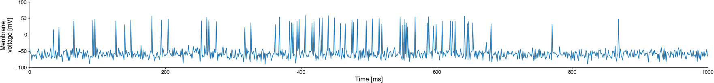

Lists#
Spike detection with python#

Present data in code (individual voltage values, manipulate them and store the results) - variables
Compare variables (voltage to threshold) - boolean values
Perform different actions based on the value of a variable (only keep the position if the voltage exceeds the threshold) - if-else statements
Present and access data in a time series of voltage values - lists
Perform an action for each element in a sequence of values (inspect voltage values one-by-one) - for loops
Separate data and logic so we can use the same code for new recordings - functions
Apply this to multi data files
Plot and save the results
The core computation of the spike detection problem is solved!!
Now we need to learn how to process a whole time series of voltage values!
We could print the numbers from the text file to paper, read them, and then manually enter different values of the voltage variable. But this would be tedious.
So far all variables hold single values - numbers or strings. How do we present sequences of numbers? And how do we work through a sequence and apply the spike detection to each individual value in the sequence? This is were lists and loops come into play…
Present and access data in a time series - lists#
Making lists#
Lists hold an ordered sequence of values. The individual elements of a list are called items.
Lists are constructed by enclosing a comma-separated sequence of items - values or variable names - with square brackets:
my_list = [item1, item2, item3]
a = [-10, -12, -23, -45, 10, -12, -23]
print(a)
[-10, -12, -23, -45, 10, -12, -23]
You can store, or “collect”, multiple variables in a list. Do you understand what is happening here?
x = 10
y = 20
outlier = -1_000
b = [x, outlier, y]
print(b)
[10, -1000, 20]
You can mix variables of different types, like numbers and text, in the same list:
b = [1, 2, 3.14, 'pi']
print(b)
[1, 2, 3.14, 'pi']
Lists can even contain other lists as items - this will results in a list of lists, or a so-called nested list:
elements = ['zinc', 'gold', 'radium']
atomic_numbers = [30,79,88]
nested_list = [elements, atomic_numbers]
print('elements:', nested_list[0])
print('atomic numbers:', nested_list[1])
print('nested_list:', nested_list)
elements: ['zinc', 'gold', 'radium']
atomic numbers: [30, 79, 88]
nested_list: [['zinc', 'gold', 'radium'], [30, 79, 88]]
You can think of a nested list like of a table, with the nested list containing to columns (in the example above: elements, atomic numbers).
You can create empty lists (for adding items to it later) in two ways:
c = []
d = list()
Indexing - accessing individual elements of a list#
You can access the values of different elements of the list by enclosing an integer “index”, which is the position of a list element, in square brackets following the name of the list variable.
The index (position) of the first element is 0, not 1!
a = [-10, -12, -23, -45, 10, -12, -23]
print('the full list:', a)
print('the first element (index 0):', a[0])
print('the second element (index 1):', a[1])
print('the fifth element (index 5):', a[4])
print('the last element (index -1):', a[-1])
the full list: [-10, -12, -23, -45, 10, -12, -23]
the first element (index 0): -10
the second element (index 1): -12
the fifth element (index 5): 10
the last element (index -1): -23
Note: The index must be a positive or negative integer value! Indexing with a float throws an error:
a = [1235, 31354, 235]
a[1.0]
---------------------------------------------------------------------------
TypeError Traceback (most recent call last)
Cell In[7], line 2
1 a = [1235, 31354, 235]
----> 2 a[1.0]
TypeError: list indices must be integers or slices, not float
Exercises “Loops” 1+2.
Index arithmetic#
We can use variables for indexing!! This allows us to perform computations on indices.
For instance, given an index, we can get the list preceeding or the following item:
a = [1, 12, 235, 424, 1234, 14456]
idx = 4
print('Value at index', idx, a[idx])
print('Value following index', idx, a[idx+1])
print('Value preceeding index', idx, a[idx-1])
Value at index 4 1234
Value following index 4 14456
Value preceeding index 4 424
Accessing parts of a list - slice indexing#
General form list[start_index:stop_index:step].
You can omit start_index, stop_index, or step and python will fill in default values:
default for
start_indexis 0 (first index)default for
stop_indexis the last element.default for
stepis 1 (get every element)
Important: When specifying stop_index the element at the stop_index itself is not included.
a = [1, 12, 235, 424, 1234, 14456]
print(a[:4])
print(a[4:])
print(a[::2])
print(a[1::2])
print(a[1:4:2])
print(a[::-2])
[1, 12, 235, 424]
[1234, 14456]
[1, 235, 1234]
[12, 424, 14456]
[12, 424]
[14456, 424, 12]
[1, 12, 235, 424, 1234, 14456]
Clicker question “lists indexing”(Click me!)
Given the list a = [10, 20, 30, 40, 50],
Which of the following outputs is correct?
a[1] -> 10
a[-1] -> 40
a[::2] -> [10, 20]
a[3:] -> [30, 40, 50]
b = 5; a[b-2] -> 40
Getting the number of elements in a list#
The len function gives us the number of elements in the list, its “length”. You use the len function like the print function - you “call” it by it’s name “len” followed by its “argument” in parentheses: len(name_of_list_variable).
a = [-10, -12, -23, -45, 10, -12, -23]
print(a)
print("A has", len(a), "elements.")
[-10, -12, -23, -45, 10, -12, -23]
A has 7 elements.
However, while the print function did not “return” a result - it simply printed the input - len does return a result - the number of elements in the list - and we can store this number in a new variable for further computations.
length_of_a = len(a)
print(length_of_a)
7
List manipulations#
Adding elements to a list#
To build up a list of spike times, we need to be able to add elements to a list as they are computed.
This is done using the append method, which will add its argument to the end of the list.
The append method is like a function. But while functions (print, len) are independent bocks of code, methods are attached to a variable.
The append method is attached to each list variable and is used like so: name_of_list_variable.append(new_element).
There are many more list methods which we will not discuss - see the bonus section below.
spike_times = [] # intialize an empty list
print(spike_times)
time_of_first_spike = 10.3
spike_times.append(time_of_first_spike)
print(spike_times)
time_of_second_spike = 50.3
spike_times.append(time_of_second_spike)
print(spike_times)
[]
[10.3]
[10.3, 50.3]
Bonus: Adding multiple elements to a list#
# `append` will append the list [1,2,3] as a a single element to the original list and create a nested list
my_list = ['a','b']
print(my_list)
my_list.append([1, 2, 3])
print(my_list)
# `extend` will add the elements in the argument as individual elements of the list:
my_list.extend([5, 6, 7])
print(my_list)
['a', 'b']
['a', 'b', [1, 2, 3]]
['a', 'b', [1, 2, 3], 5, 6, 7]
Deleting list elements#
We can remove elements using the del function with the list element we want to delete as an argument:
my_list = [10, 20, 30, 40]
print(my_list)
del(my_list[1])
print(my_list)
[10, 20, 30, 40]
[10, 30, 40]
Clicker question “lists manipulations 1”(Click me!)
What is the length of the list names at the end of this code?
names = ['Toby', 'Goby', 'Moby']
names.append('Roby')
del(names[1])
Clicker question “lists manipulations 2”(Click me!)
What will be printed at the end of this code?
names = ['Toby', 'Goby', 'Moby']
names.append('Roby')
del(names[1])
print(names[1])
Bonus: More list functions#
https://docs.python.org/3/tutorial/datastructures.html
pop(index) # return and remove indexed or if arg is omitted, the last element
append(value) # add single value to list
extend([val1, val2]) # add elements of a list as individual elements to a list
insert(index, value) # insert value at index
remove(value) # remove item by value
del(list[index]) # remove item by index
index(value) # get first index of value
sort(list, reverse=False) # sort the list in-place - returns None
sorted(list) # return sorted copy of the list without changing the original one
value in list # value if item is in list
Spike detection with python#
Present data in code (individual voltage values, manipulate them and store the results) - variables
Compare variables (voltage to threshold) - boolean values
Perform different actions based on the value of a variable (only keep the position if the voltage exceeds the threshold) - if-else statements
Present and access data in a time series of voltage values - lists
Perform an action for each element in a sequence of values (inspect voltage values one-by-one) - for loops
Separate data and logic so we can use the same code for new recordings - functions
Apply this to multi data files
Plot and save the results